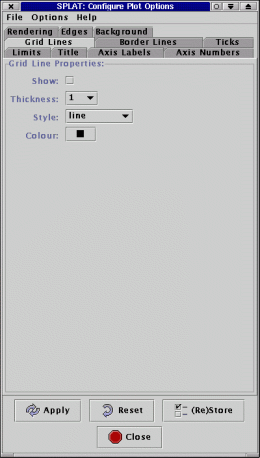

Next: Border Line Properties:
Up: The plot configuration window
Previous: Axes:

This page allows you to configure if grid lines are drawn in the plot,
or not (not by default). Grid lines are drawn between the major
ticks. You can also set the thickness, style and colour of the grid lines.
Next: Border Line Properties:
Up: The plot configuration window
Previous: Axes:
SPLAT-VO -- A VO-enabled Spectral Analysis Tool
Starlink User Note 243
Peter W. Draper
30 June 2005
E-mail:splat@star.rl.ac.uk
Copyright © 2001-2005 Council for the Central Laboratory of the
Research Councils